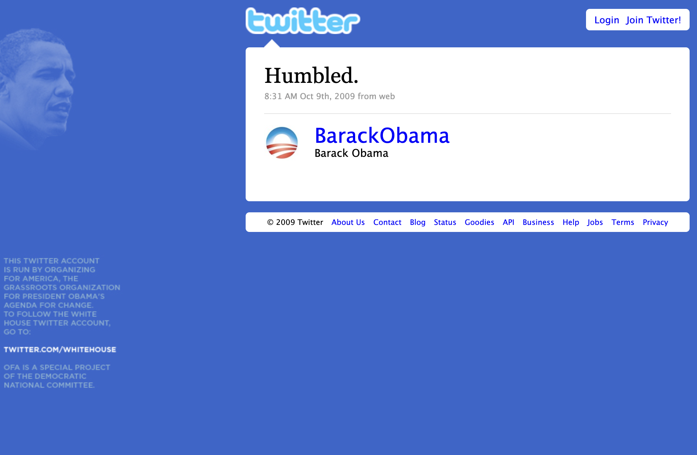

American Interregnum
A pop-up newsletter covering the 2020–21 presidential transition, co-written and edited with Justin Hendrix and Melissa Ryan. Issues under my own byline are mine alone; the archive as a whole also reflects my tone-setting work as copy and content editor across the run.
Read the full archiveDisinformation Decoder
Developed at Planned Parenthood Action Fund to identify and rebut deceptive rhetoric in anti-abortion messaging — term by term, from "abortifacient" to "unborn baby." A reference resource designed to hold a consistent standard of precision across diverse entries.
Production note: Completed and mapped for publication; the organization underwent a round of layoffs, including mine, before it went live. What's linked here is the final draft as prepared for web.
View the draft (PDF)Issue Pages, Planned Parenthood Action Fund
Long-form issue explainers built to translate legal and legislative complexity — voter suppression, judicial nominations — into pages a general reader could act on. I directed digital content strategy across pages like these, working with the editorial, political, and creative teams to keep tone and structure consistent site-wide.
Voting RightsFederal Courts (archived)
“How the Senate Botched the Afghanistan Withdrawal”
The New Republic — An analysis of Senate hold procedure and its national security costs, arguing institutional mechanics from consequence rather than ideology.
Read at The New Republic“Women’s health experts in action.”
Written for Cecile Richards, then-president of Planned Parenthood Action Fund, paired with a photo of the nearly all-male House GOP taking a victory lap after passing legislation to gut reproductive health coverage. Seven words, no argument spelled out — the image and the caption do the whole job.
Can You Hear Us Now? Voicemails to Congress
Built from a repository of thousands of constituent voicemails to Congress. I used voice-to-text AI to surface the strongest patient testimony, developed the narrative framework and script, and partnered with video editors on the final motion graphic — which anchored a campaign to mobilize voters against congressional efforts to block patients’ access to care.
“Humbled.”
The tweet I published for President Obama’s personal account on October 9, 2009 — a one-word response to that year’s Nobel Peace Prize announcement. I stewarded the account for the first year of his presidency, maintaining a voice that wasn’t mine while building processes that allowed for quick, careful action during fast-moving events.
